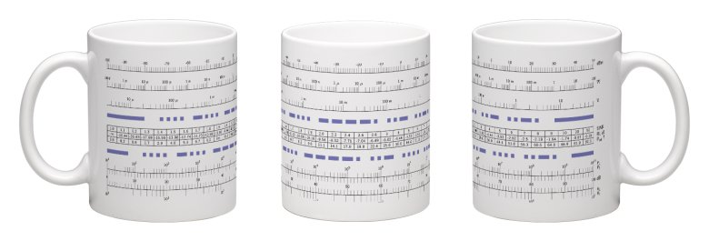

Introduction
This page provides an overview of the POWERMUG and shows how to use it. First
of all, this was not my idea. A similar mug was distributed by R&S as
business giveaway some time ago, but unfortunately I didn't manage to grab
one at the time and as far as I can tell those are not manufactured anymore.
Hence, I decided to cook up my own and to publish the design. The idea is to
provide a useful and nice-looking tool for quick decibel conversions. The
project is licensed under the CC BY-SA 4.0 license; the Latex source files can
be retrieved from the
github
project page. Only the source files are available online, you have to
generate the output yourself by running latex. Please respect the license when
doing so. The POWERMUG consists of three sections that are discussed below. An
explanation in German was posted
here.

Top section: dBm, Watts and Volts conversion
The first section allows you to quickly convert between dBm, Watts and Volts.
It spans the range from -100 to +0 dBm. For example, to get the power
in W of a +13 dBm signal, you look up the intersection of the vertical line at
13 dBm with the W scale to find that 13 dBm correspond to 20 mW:
Using the same method, you find that the 13 dBm signal has 1 Vrms in a
50 Ω system. Of course, you can use the same nomogram to convert from W to
dBm, from V to W etc.
Middle section: SWR, return loss and reflected power conversion
The table in the second section is used to convert between standing wave ratio
(SWR), return loss (RL) and the percentage of reflected power. For example, a
perfect match yields a standing wave ratio of 1, no reflected power and therefore
a return loss of -∞. Similarly, a 75 Ω load in a (lossless) 50 Ω
system yields a SWR of 75/50=1.5, reflecting 4 % of the incident power which
corresponds to a return loss of -14 dB. Note that the reflected power is
not the reflection coefficient Γ, which would be 0.2 in this example.
Bottom section: Gain, power- and voltage-ratios
With the nomogram in the third section, you can convert between gain
(attenuation for negative values) in decibels and power- or voltage-ratios.
For example, a gain of +20 dB corresponds to a power-ratio of 100
(10
2) and to a voltage-ratio of 10 (10
1).